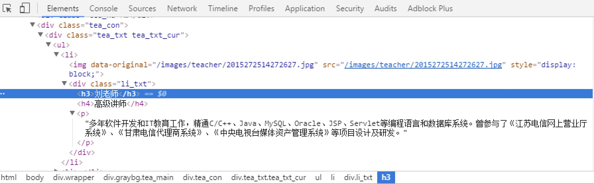

入门案例
学习目标
- 创建一个Scrapy项目
- 定义提取的结构化数据(Item)
- 编写爬取网站的 Spider 并提取出结构化数据(Item)
- 编写 Item Pipelines 来存储提取到的Item(即结构化数据)
一. 新建项目(scrapy startproject)
- 在开始爬取之前，必须创建一个新的Scrapy项目。进入自定义的项目目录中，运行下列命令：
scrapy startproject mySpider
- 其中， mySpider 为项目名称，可以看到将会创建一个 mySpider 文件夹，目录结构大致如下：

下面来简单介绍一下各个主要文件的作用：
scrapy.cfg ：项目的配置文件
mySpider/ ：项目的Python模块，将会从这里引用代码
mySpider/items.py ：项目的目标文件
mySpider/pipelines.py ：项目的管道文件
mySpider/settings.py ：项目的设置文件
mySpider/spiders/ ：存储爬虫代码目录
二、明确目标(mySpider/items.py)
我们打算抓取：http://www.itcast.cn/channel/teacher.shtml 网站里的所有讲师的姓名、职称和个人信息。
打开mySpider目录下的items.py
Item 定义结构化数据字段，用来保存爬取到的数据，有点像Python中的dict，但是提供了一些额外的保护减少错误。
可以通过创建一个 scrapy.Item 类， 并且定义类型为 scrapy.Field的类属性来定义一个Item。
接下来，创建一个ItcastItem 类，和构建item模型（model）。
import scrapy
class ItcastItem(scrapy.Item):
name = scrapy.Field()
level = scrapy.Field()
info = scrapy.Field()
三、制作爬虫 （spiders/itcastSpider.py）
爬虫功能要分两步：
1. 爬数据
- 在当前目录下输入命令，将在
mySpider/spider目录下创建一个名为itcast的爬虫，并指定爬取域的范围：
scrapy genspider itcast "itcast.cn"
- 打开 mySpider/spider目录里的 itcast.py，默认增加了下列代码:
import scrapy
class ItcastSpider(scrapy.Spider):
name = "itcast"
allowed_domains = ["itcast.cn"]
start_urls = (
'http://www.itcast.cn/',
)
def parse(self, response):
pass
其实也可以由我们自行创建itcast.py并编写上面的代码，只不过使用命令可以免去编写固定代码的麻烦
要建立一个Spider， 你必须用scrapy.Spider类创建一个子类，并确定了三个强制的属性 和 一个方法。
name = ""：这个爬虫的识别名称，必须是唯一的，在不同的爬虫必须定义不同的名字。allow_domains = []是搜索的域名范围，也就是爬虫的约束区域，规定爬虫只爬取这个域名下的网页，不存在的URL会被忽略。start_urls = ()：爬取的URL元祖/列表。爬虫从这里开始抓取数据，所以，第一次下载的数据将会从这些urls开始。其他子URL将会从这些起始URL中继承性生成。parse(self, response)：解析的方法，每个初始URL完成下载后将被调用，调用的时候传入从每一个URL传回的Response对象来作为唯一参数，主要作用如下：- 负责解析返回的网页数据(response.body)，提取结构化数据(生成item)
- 生成需要下一页的URL请求。
将start_urls的值修改为需要爬取的第一个url
start_urls = ("http://www.itcast.cn/channel/teacher.shtml",)
修改parse()方法
def parse(self, response):
with open("teacher.html", "w") as f:
f.write(response.text)
然后运行一下看看，在mySpider目录下执行：
scrapy crawl itcast
是的，就是 itcast，看上面代码，它是 ItcastSpider 类的 name 属性，也就是使用 scrapy genspider命令的爬虫名。
一个Scrapy爬虫项目里，可以存在多个爬虫。各个爬虫在执行时，就是按照 name 属性来区分。
运行之后，如果打印的日志出现
[scrapy] INFO: Spider closed (finished)，代表执行完成。 之后当前文件夹中就出现了一个 teacher.html 文件，里面就是我们刚刚要爬取的网页的全部源代码信息。
2. 取数据
- 爬取整个网页完毕，接下来的就是的取过程了，首先观察页面源码：

<div class="li_txt">
<h3> xxx </h3>
<h4> xxxxx </h4>
<p> xxxxxxxx </p>
是不是一目了然？直接上XPath开始提取数据吧。
- 我们之前在mySpider/items.py 里定义了一个ItcastItem类。 这里引入进来
from mySpider.items import ItcastItem
- 然后将我们得到的数据封装到一个
ItcastItem对象中，可以保存每个老师的属性：
from mySpider.items import ItcastItem
def parse(self, response):
#open("teacher.html","wb").write(response.body).close()
# 存放老师信息的集合
items = []
for each in response.xpath("//div[@class='li_txt']"):
# 将我们得到的数据封装到一个 `ItcastItem` 对象
item = ItcastItem()
#extract()方法返回的都是字符串
name = each.xpath("h3/text()").extract()
title = each.xpath("h4/text()").extract()
info = each.xpath("p/text()").extract()
#xpath返回的是包含一个元素的列表
item['name'] = name[0]
item['title'] = title[0]
item['info'] = info[0]
items.append(item)
# 直接返回最后数据
return items
- 我们暂时先不处理管道，后面会详细介绍。
保存数据
scrapy保存信息的最简单的方法主要有四种，-o 输出指定格式的文件，，命令如下：
# json格式，默认为Unicode编码
scrapy crawl itcast -o teachers.json
# json lines格式，默认为Unicode编码
scrapy crawl itcast -o teachers.jsonl
# csv 逗号表达式，可用Excel打开
scrapy crawl itcast -o teachers.csv
# xml格式
scrapy crawl itcast -o teachers.xml
思考
如果将代码改成下面形式，结果完全一样。
请思考 yield 在这里的作用：
from mySpider.items import ItcastItem
def parse(self, response):
#open("teacher.html","wb").write(response.body).close()
# 存放老师信息的集合
#items = []
for each in response.xpath("//div[@class='li_txt']"):
# 将我们得到的数据封装到一个 `ItcastItem` 对象
item = ItcastItem()
#extract()方法返回的都是字符串
name = each.xpath("h3/text()").extract_first()
title = each.xpath("h4/text()").extract_first()
info = each.xpath("p/text()").extract_first()
#items.append(item)
#将获取的数据交给pipelines
yield item
# 返回数据，不经过pipeline
#return items